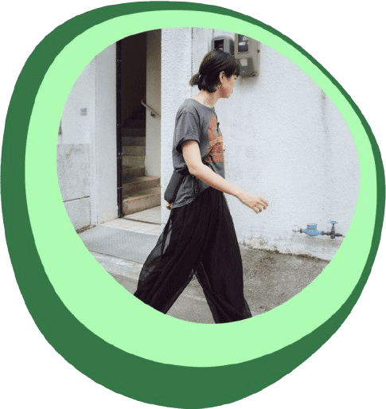

（わたしのこと）

caco
（Webデザイナー／革職人）
1998年沖縄生まれ。
大学卒業後、レザーショップに勤め革職人としてものづくりに携わってきました。
何かを作り出すことはもともと好きだったので、オンライスクールにてデザインや
コーディングを学び始めました。
その中で、革職人の経験から商品やサービスそのものだけでなく、その背景にある
“つくり手の想いを伝える”ことを
お手伝いしたいと思うようになりました◎
現在は革職人×Webデザイン、二つの視点を生かして、ていねいに想いを届ける
活動を続けています。
1998年沖縄生まれ。
大学卒業後、レザーショップに勤め革職人としてものづくりに携わってきました。
何かを作り出すことはもともと好きだったので、オンライスクールにてデザインや
コーディングを学び始めました。
その中で、革職人の経験から商品やサービスそのものだけでなく、その背景にある
“つくり手の想いを伝える”ことを
お手伝いしたいと思うようになりました◎
現在は革職人×Webデザイン、二つの視点を生かして、ていねいに想いを届ける
活動を続けています。
ご覧いただきありがとうございました☺︎